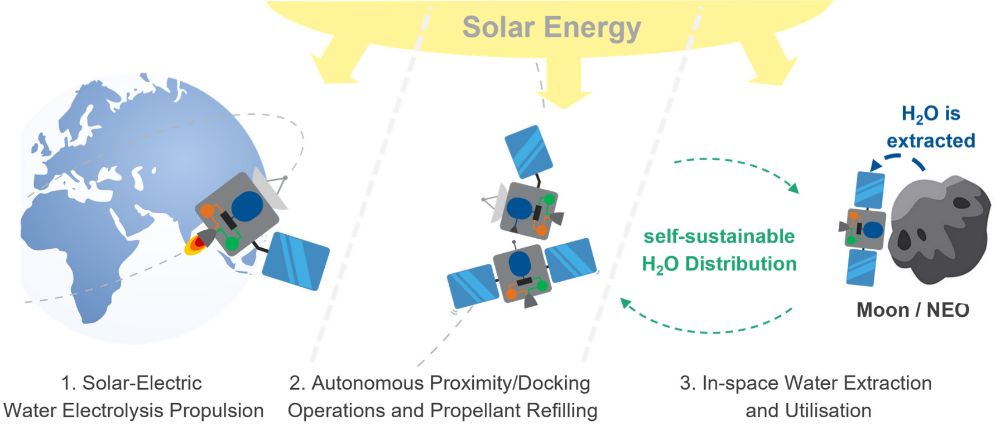
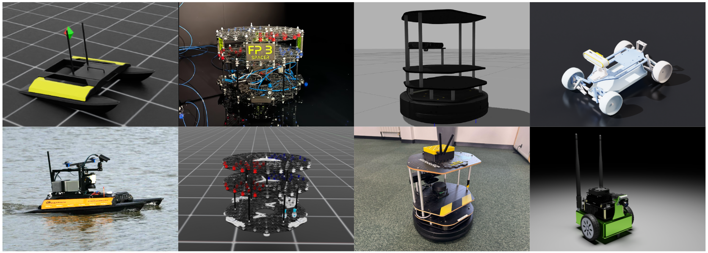
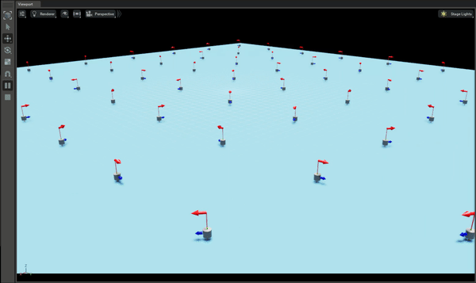

Research & Projects

ICE2THRUST 2025–present
Autonomous spacecraft GNC for an EIC Pathfinder project that turns water ice extracted in space into thrust.

AIRSHIP FALCON-S 2023–present
Autonomous GNC and high-fidelity ground-effect simulation for unmanned wing-in-ground vehicles (Horizon Europe).

RoboRAN 2025
A unified IsaacLab framework for RL-based navigation across robots, tasks and media, with sim-to-real transfer.

DRIFT 2024
Deep RL control of floating platforms, microgravity analogs for testing space navigation, from simulation to the lab.

REACT 2021
Deep RL attitude control for nanosatellites, robust to reaction-wheel failures.